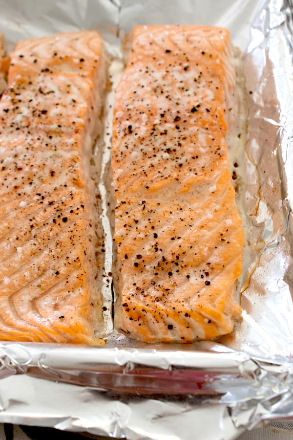

Oven Broiled Salmon Fillet

Description
Salmon is a favorite meal of mine as it's simple, and healthy! It also helps that the skin is edible and full of Omega-3s.
With this recipe courtesy of my mother, you will soon be eating delicious lemon zest covered salmon!
Ingredients
- One 8.oz Salmon Fillet Per Person
- 2 tsp Lemon Juice
- Seasoning Salt
- Tin Foil
- Olive Oil
Steps
- Pre-heat oven to 425 degrees fahrenheit.
- Lay sheet of tin foil across oven pan. Pour olive oil over tin foil to avoid sticking.
- Use tongs to lay salmon skin side down onto pan.
- Once pre-heated, place pan on middle oven rack, set timer to 10 minutes.
- Once timer goes off, use oven mitts to place pan on stove, turn off oven, and let cool.
- Enjoy!